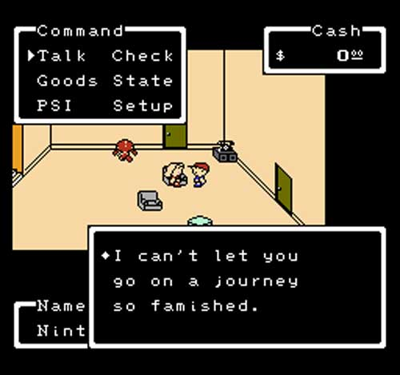

Peu après le succès de MOTHER au Japon, Nintendo of America se pressa d'en faire une traduction pour le public Occidental. Le résultat sera bien plus qu'une traduction ; certains aspects du jeu ayant été fondamentalement changés.
Lorsqu'en 1990, Nintendo of America (qui sera par la suite abrégé en NoA) confia à Phil Sandhop la localisation d'un certain MOTHER pour un public Occidental, des modifications ont dû être surlignées pour correspondre aux règles plutôt strictes de NoA et rendre le jeu plus attrayant pour un public Américain. Ces changements incluent :
Le titre du jeu a d'abord été changé pour EARTH BOUND (deux mots) pour une raison qui n'est pas vraiment connue. On sait simplement que la pochette originale du jeu, un texte jaune sur rouge, faisait trop penser à une boîte de Campbells, une marque américaine de soupes en conserve, et qu'ainsi le texte a été changé pour du rouge sur noir.
La majorité des noms des villes a été totalement changé. Les villes originales étaient nommées selon diverses fêtes et événements de la culture Occidentale. Bien que Sandhop trouvait ses noms mignons, ils lui paraissaient bien trop enfantins, pouvant ainsi possiblement détourner certaines audiences du jeu.
Ainsi, dans le prototype du jeu, les noms des villes sont les suivants :
| MOTHER | EarthBound Beginnings |
|---|---|
| Mother's Day | Podunk |
| Thanksgiving | Merrysville |
| Santa Claus Station | Union Station |
| Halloween | Spookane |
| Easter | Youngtown |
| Valentine | Ellay |
| Holy Loly Mountain | Mount Itoi |
Mais ce n'est pas tout ! Certains faux-objets utilisés comme blagues dans la version originale on été remplacés par des objets plus utiles, comme la "TimeMachine" (donc machine temporelle), qui était au départ un objet inutile puisque que le vendeur l'avait accidentellement activé, ramenant nos chers protagonistes seulement quelques instants avant, qui a été remplacée par la très utile "Super Bomb", qui tue littéralement un ennemi en un seul coup, ce qui est extrêmement utile. Ou encore le "FriendshipRing" (donc la bague d'amitié) qui n'avait absolument aucune utilité, qui a été remplacé par le "Repel Ring" (Anneau Repoussant), qui empêche d'avoir des combats aléatoires d'ennemis moins fort que son équipe.
En ce qui concerne les règles strictes de NoA, quelques sprites des ennemis ont été soumis à une censure retirant toute allusion à drogue (donc à la cigarette), tout élément "gore" (ceci incluant les tâches de sang sur les ennemis) et les références religieuses, notamment dans les églises du jeu où toutes les croix ont été omises et remplacées.
Plus généralement, le jeu a été simplifié. Certains endroits qui étaient labyrinthiques ont été simplifiés pour ne pas encore plus complexifier l'aventure du pauvre joueur, déjà tourmenté par tous ces combats aléatoires.
Le script, traduit avec quelques libertés prises par Phil Sandhop, reste cependant fidèle au script original. Il sert également comme base pour les rééditions Japonaises, qui sont des traductions de ce script. (Oui, des traductions de traductions).
ATTENTION, CE QUI VA SUIVRE COMPORTE DES SPOILERS DE LA FIN DU JEU. SI VOUS NE VOULEZ PAS LIRE LE PASSAGE, VEUILLEZ ALLER ICI.
Mais le plus grand changement (et il est plutôt positif !) se déroule à la toute fin du jeu. Celle-ci a été totalement revue et étendue, alors que la version japonaise se terminait de manière abrupte.
Dans la version originale, après avoir dissuadé Giygas d'envahir la Terre en lui chantant les 8 mélodies, celui-ci repart dans l'espace à bord de son vaisseau spatial gigantesque. Les protagonistes se retournent pour faire face à l'écran, tandis que les crédits défilent derrière eux. Fin. Plutôt décevant, surtout après la souffrance que vous avez enduré, n'est-ce-pas ?
Et bien soyez rassurés - EarthBound Beginnings corrige cette terrible injustice ! La fin du jeu est complètement étendue, montrant ce que vos amis et les personnes que vous avez rencontrées durant votre aventure sont devenues. Les crédits de fin sont également divisés en deux parties, un peu comme dans EarthBound : il y a d'abord un défilé de tous les personnages du jeu, puis les crédits en eux-mêmes. Et surtout la fin en cliff-hanger, laissant penser à une suite ! (qui est évidemment EarthBound)
FIN DES SPOILERS, BONNE (FIN) DE LECTURE !
Ainsi, EarthBound Beginnings, malgré la censure imposée par NoA, offre une expérience de jeu moins frustrante et (très) légèrement moins dure que la version japonaise. Elle deviendra par la suite la base pour toutes les rééditions du jeu, que ce soit dans MOTHER 1+2 au Japon ou dans sa réédition sur Console Virtuelle.
Afin d'établir notre traduction, nous nous basons donc sur le prototype américain. Nous avons cependant pris le soin de le décensurer afin de rétablir les sprites originales pour la meilleure expérience possible. Nous essayons de croiser nos sources pour les dialogues, en les traduisant à partir du script anglais mais aussi du script japonais.
Si vous voulez en savoir plus à propos des différences entre les deux versions du jeu, nous vous conseillons fortement la page du site The Cutting Room Floor à ce sujet, la plupart des informations citées ici provenant de là-bas.
Traduire MOTHER est un véritable exercice qui demande une belle maîtrise de la langue. Même s'il est plus court que ses deux congénères à cause des limitations de la NES, il reste compliqué à traduire pour des raisons techniques.
La police d'écriture latine utilisée dans le prototype est affreusement large et prend donc beaucoup de place dans les boîtes de dialogue. Il a donc fallu, dans certains cas, notamment les actions dans les menus et les objets, trouver des synonymes plus courts, et faire des abréviations afin que les mots ne dépassent pas des fenêtres. C'est pour cela que nous avons créé le (futur) Guide de la VF, afin de pouvoir vous expliquer à quel nom correspondent les abréviations, au cas où vous seriez confus !
Mais en contrepartie, nous avons la possibilité de faire quelque chose d'absolument magique en ce qui concerne les dialogues : le repointage ! C'est assez technique, nous allons essayer de l'expliquer le plus simplement possible.
Pour que le jeu sache à quel endroit est stocké tel dialogue afin de pouvoir le ressortir au bon moment, il utilise des pointeurs. C'est comme s'il avait un grand agenda avec l'adresse de chaque petit dialogue, et ces adresses seraient codifiées dans des valeurs plus simples telles que 1F 4B, par exemple. C'est (plus ou moins) comme ça que ça marche !
Souvent, les phrases traduites en français sont plus longues qu'en anglais. Lorsqu'il ne nous est pas possible de les raccourir à l'aide de synonymes plus courts, nous devons alors changer de place certaines phrases. Mais le jeu ne sait pas où elles sont ensuite ! Il faut donc lui indiquer la nouvelle bonne adresse de l'emplacement de la phrase, là encore sous forme de code : c'est le repointage ! C'est un processus assez long et fastidieux mais qui donne des résultats merveilleux. C'est grâce à cette technique que cette traduction est rendue possible !
Pour notre traduction, nous avons choisi de conserver les noms originaux des villes, traduits en français. Certaines villes ont dû être traduites et adaptées (comme Snowman ou Reindeer), mais nous vous gardons la surprise pour que vous puissiez les découvrir par vous-mêmes ! Nous avons également choisi de conserver le nom original du jeu, MOTHER, pour des raisons purement esthétiques et arbitraires.
Content for tab 3.
Sources :
MOTHER Forever - Différences entre MOTHER et Earth Bound
The Cutting Room Floor - Différences régionales entre les deux jeux